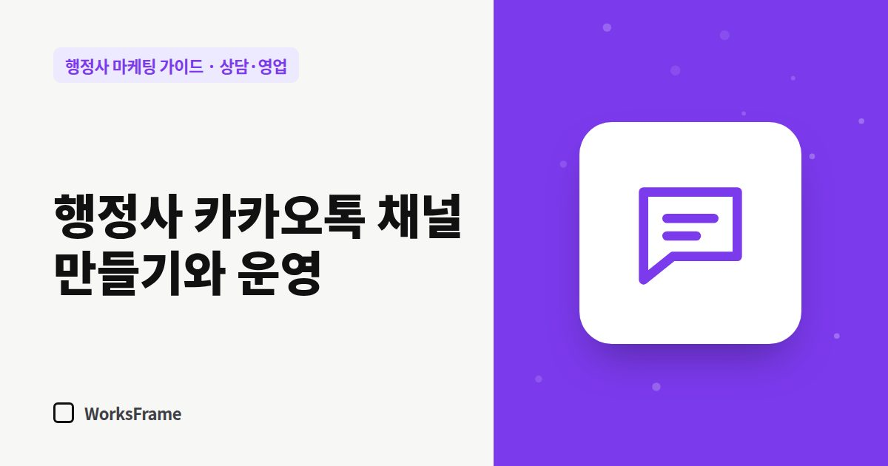

상담·영업
행정사 카카오톡 채널 만들기와 상담 운영 팁
한 줄 답
개인 카톡 대신 사무소용 카카오톡 채널을 만들고, 자동 인사말로 업무·기한·통지서 사진을 먼저 받으세요. 신분증 사본은 일을 맡기로 정한 뒤에 받으세요.

행정 업무 상담은 사진과 서류가 오가는 일이 많아 카톡이 편합니다. 하지만 개인 카톡을 쓰면 퇴근 후에도 알림이 울리고, 고객 서류가 가족 대화방 사이에 섞입니다. 사무소용 카카오톡 채널로 창구를 분리하세요.
채널 만들기
- 카카오비즈니스에서 카카오톡 채널 개설 (사무소 운영용 카카오 계정)
- 프로필 사진(로고 또는 대표 사진), 채널 이름(사무소명과 같게)
- 소개 문구 — 주력 업무 + 상담 시간
- 홈페이지·네이버 플레이스·명함 QR에 채널 링크 연결
비즈니스 인증 등 추가 기능은 카카오비즈니스 안내를 따르세요.
첫 메시지 자동 응답
고객이 처음 말을 걸면 자동으로 보낼 인사말을 준비하세요.
안녕하세요, ○○행정사사무소입니다. 상담 시간은 평일 9시~18시입니다. 빠른 안내를 위해 ① 어떤 업무인지 ② 기한이 있는지 ③ 받은 통지서가 있다면 사진을 보내 주세요. ※ 신분증 번호 등 민감한 정보는 아직 보내지 말아 주세요.
서류 받는 규칙
- 처음에는 통지서·안내문 사진 정도만
- 신분증·여권 사본 등은 수임이 정해진 뒤 필요한 것만
- 받은 파일은 사건 폴더로 옮기고, 대화방에 쌓아 두지 않기
상담 시간 밖 메시지
자동 응답에 “상담 시간 외 메시지는 다음 영업일 오전에 답변드립니다”를 넣어 두면 고객도 기다릴 줄 압니다.
채널 친구에게 보내는 메시지는 신중하게
채널 친구에게 홍보 메시지를 보내는 기능이 있지만, 광고성 메시지는 보내는 규칙이 있습니다. 대량 발송 전에는 수신 동의와 표기 의무를 확인하세요. (영업 연락 규정)
자주 묻는 질문
개인 카톡에서 이미 상담 중인 고객은요?
진행 중인 건은 마무리하고, 새 문의부터 채널로 안내하세요. 명함과 홈페이지 링크를 채널로 바꾸면 자연스럽게 옮겨집니다.
채널 상담 기록은 얼마나 보관하나요?
사무소의 개인정보 처리방침에 적은 기준을 따르세요. 필요 없는 기록은 정리하는 습관이 중요합니다.